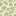

本文へ移動
BEDROCK
STRATA
序文
第1章
第2章
第3章
✳ ENEND ↗
🇯🇵
日本語
🇬🇧
EN
COMPENDIUM OF THE ABYSS
BEDROCK
STRATA
+
攻略ガイド：深淵の博物誌
答えは無ではない。
本文を読む
↓
ENEND
↗
COMPENDIUM
OF THE ABYSS
PREFACE
序文：世界と世界の「隙間」には何があるのか？
CHAPTER 01
第1章：折り重なる不条理な大地

CHAPTER 02
第2章：消去されたはずの住人たちと深淵の主たち
CHAPTER 03
第3章：発掘素材と金床の秘儀